DAMIAO Motor Setup Guide — DM-J4340P-2EC with DM_Motor_Tool
Context in English, operating instructions in Polish, original Chinese kept in collapsible blocks.
Source: 达妙电机保姆级调试流程文档 (Feishu, author space “萝博派对”, last modified 20 Apr 2026, change log entries dated 2026‑02‑02). Retrieved 9 Oct 2026. Screenshots are the originals from that document.
Purpose of this page
This is the knowledge base for commissioning a brand‑new DAMIAO (达妙) joint motor: wiring it up, establishing serial/CAN communication with the vendor tool DM_Motor_Tool, running encoder and parameter calibration, assigning CAN IDs, saving the mechanical zero, and (if needed) updating firmware. The procedure was written by the original authors for the DM‑J4340P‑2EC (48 V), firmware 6117, DM_Motor_Tool v1.8.0.1. It applies to other DAMIAO motors with the caveats noted in each section.
USB‑to‑CAN adapter (vendor one); serial port settings 921600 baud, 8 data bits, no parity, 1 stop bit
Power
XT30 connector, adjustable bench PSU, current limit ≈ 3 A, never above rated voltage
CAN wiring
H↔H, L↔L. Default CAN bus speed shown in tool: 1000 kbps
ID rule
Master ID = Slave ID + 0x10. Factory default Slave ID 0x01 (so Master 0x11)
LED meaning
Red = powered, disabled. Green = enabled (motor energised)
Firmware naming
Version 6117 = model code 61 (DM‑J4340P‑2EC) + iteration 17. Only flash files whose first two digits match the motor’s current firmware.
Flash success string
Update firmware completed!!! in the serial console
Not retrieved
The Feishu attachment USB转CAN.zip (20.42 MB, bundle of the tool). Use the gitee repo instead.
Vendor warning (from the source doc)
EN: Always use the official DAMIAO host software (DM_Motor_Tool). A mismatched version can produce garbled parameter reads or make it impossible to enter enable mode. PL: Zawsze używaj oficjalnego oprogramowania DAMIAO (DM_Motor_Tool). Niewłaściwa wersja może powodować „krzaki” przy odczycie parametrów albo uniemożliwić wejście w tryb enable.
1. Software and hardware preparation
1.1 Software environment
Context (EN)
DM_Motor_Tool is a Windows desktop app that talks to the motor through the vendor USB‑to‑CAN adapter. It exposes tabs for Serial, Parameter settings, Calibration, Debug and Analysis, plus a text console that echoes everything the motor firmware prints. The document is based on v1.8.0.1; the tool is open source on gitee. Because the binary is unsigned, Windows SmartScreen blocks the first launch.
Instrukcja (PL)
Pobierz DM_Motor_Tool (wersja 1.8.0.1 lub nowsza) z repozytorium gitee.com/kit-miao/dm-tools. W oryginalnym dokumencie był też załącznik USB转CAN.zip (20,42 MB) z gotowym narzędziem – nie został pobrany.
Uruchom program na Windows. Jeśli pojawi się okno „Windows protected your PC” (Windows 已保护你的电脑), kliknij „More info” (更多信息), a potem „Run anyway” (仍要运行).
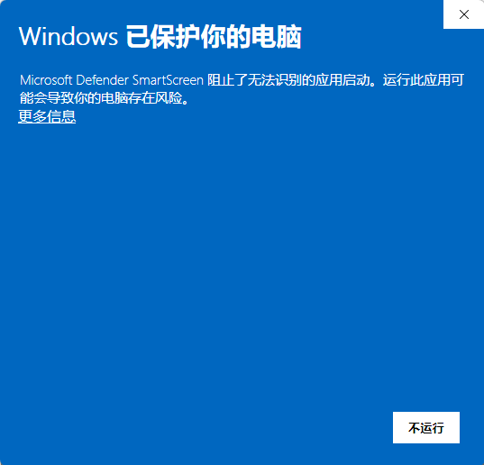
Fig. 1 — SmartScreen on first launch: click “More info” (更多信息), then “Run anyway” (仍要运行). / Okno SmartScreen: „More info”, potem „Run anyway”.Original Chinese (1.1)
The motor has two connectors: an XT30 for DC power and a small signal connector carrying CAN H / CAN L. During bench commissioning the motor is powered from an adjustable lab PSU with the current limit engaged, so that a miswire or a short cannot deliver destructive current. The DM‑J4340P‑2EC is a 48 V motor; other DAMIAO motors are 24 V, so always read the label. Reverse power polarity or hot‑plugging under power can carbonise the connector and destroy the driver MCU, which the vendor considers unrepairable.
Instrukcja (PL)
Dane: podłącz adapter USB‑CAN do komputera.
Zasilanie: podłącz zasilacz do złącza XT30 silnika.
⚠️ Zdecydowanie zalecane: na etapie uruchamiania używaj regulowanego zasilacza laboratoryjnego z włączonym ograniczeniem prądu, żeby zwarcie nie uszkodziło silnika.
Napięcie: sprawdź napięcie znamionowe na etykiecie silnika (DM‑J4340P‑2EC: 48 V). Nigdy nie przekraczaj napięcia znamionowego. Zalecane ograniczenie prądu: 3 A.
Kontrola okablowania:
Zasilanie: nigdy nie zamieniaj biegunów (+/−).
Magistrala CAN: łącz H z H, L z L. Jeśli komunikacja nie działa, w pierwszej kolejności sprawdź, czy H/L nie są zamienione.
❗ Ostrzeżenia bezpieczeństwa:
Nie podłączaj ani nie odłączaj niczego pod napięciem. Iskra przy podłączaniu pod napięciem zwęgla styki złącza, a nawet przebija MCU – silnik nadaje się wtedy do wyrzucenia.
Prawidłowe wypinanie: złącze trzymaj za obudowę (plastik). Nigdy nie ciągnij za przewody.
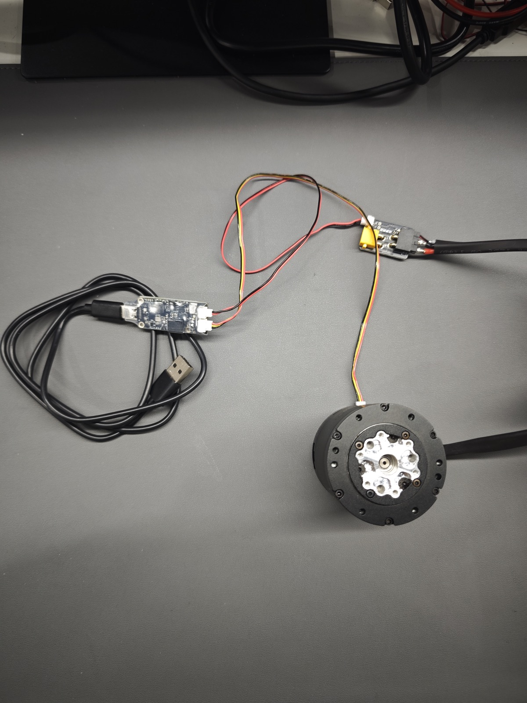
Fig. 2 — Bench wiring: USB‑to‑CAN adapter (left), CAN signal lead to the motor connector, XT30 power lead (top right). / Okablowanie stanowiska: adapter USB‑CAN, przewód CAN do silnika, zasilanie XT30.Original Chinese (1.2)
1.2 硬件连接
1. 数据传输：将 USB 转 CAN 适配器插入 PC。
2. 供电接入：XT30 接口连接电源。
⚠️ 强力建议：调试阶段使用可调稳压电源，并将限流保护开启，防止短路。
3. 电压匹配：确认电机额定电压（如本文 DM-J4340P-2EC 支持 48V），严禁超压，限流建议选择3A。
4. 线序核对：
◦ 电源线：严禁正负极反接。
◦ CAN 总线：遵循 H 对 H，L 对 L。若通讯失败，优先交叉检查线序。
❗ 安全警告：
• 严禁带电热插拔：带电操作产生的瞬时火花极易导致接口碳化，甚至击穿 MCU 导致电机报废。
• 正确拔插：插拔端子时应捏住胶壳受力，严禁直接暴力拽拉线束。
2. Initialising a brand‑new motor
2.1 Establish communication
Context (EN)
On power‑up the motor LED turns red (powered, disabled). The adapter enumerates as a virtual COM port; DM_Motor_Tool talks to it at 921600 baud. Once the port is opened, the motor firmware prints a banner into the console: driver version, firmware version/sub‑version, current‑sense offsets, encoder offsets, CAN ID / Master ID / CAN baud, measured phase resistance and inductance, flux linkage, bus voltage, the four control modes (MIT, position‑speed cascade, speed, hybrid) and the console commands (m motor mode, s setup mode, esc exit). This banner is the first health check and also where you later read the firmware version.
Instrukcja (PL)
Stan po włączeniu: po podaniu zasilania dioda silnika powinna świecić na czerwono (patrz Fig. 3).
Wybór portu: w panelu „通讯设定” (Communication settings) kliknij „刷新串口” (Refresh ports) i wybierz właściwy port COM. Parametry: 921600 baud, 8 bitów danych, brak parzystości, 1 bit stopu (Fig. 4).
Wskazówka: przed uruchomieniem odłącz od komputera inne niepotrzebne urządzenia szeregowe, żeby nie pomylić portów.
Otwarcie portu: kliknij „打开串口” (Open serial port). W konsoli po prawej stronie pojawią się podstawowe dane silnika po włączeniu zasilania (Fig. 5). Jeśli nic się nie wyświetla – sprawdź okablowanie CAN (H/L) i zasilanie.
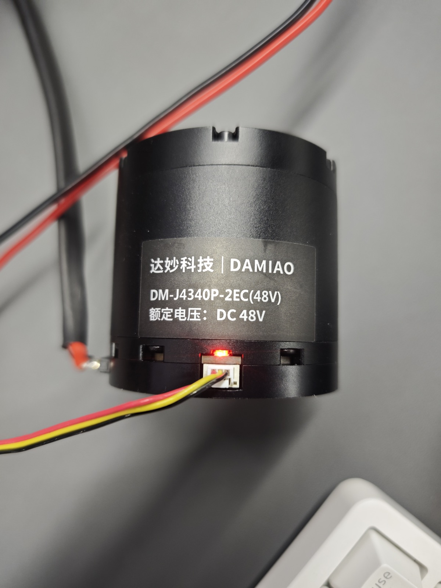
Fig. 3 — Powered motor: label “DM‑J4340P‑2EC (48V), 额定电压 DC 48V”, LED red. / Silnik po włączeniu, dioda czerwona.
Fig. 5 — Console banner after “Open serial port”. Shows hardware V3.0, firmware 6117 sub 004, CAN ID 0x001, Master 0x000, 1 Mbps, motor Rs/Ls/Ψf, V_BUS ≈ 48.3 V. / Konsola po otwarciu portu.
DMBOT Motor Driver--V3.0
Debug Info:
Firmware Version: 6117
Sub Version: 004
Imax: 10.261194
I_U Offset: 2055.9480 I_V Offset: 2077.7070 I_W Offset: 2116.4961
Position Sensor Electrical Offset: -2.1390
Mechanical Offset: 0.0000
Output Position: 0.7150
CAN ID: 0x001 MASTER ID: 0x000 CAN Baud: 1.00Mbps
Motor Info: Rs = 736.9642 mΩ Ls = 328.9949 μH Ψf = 0.0046 Wb V_BUS=48.2971
Control Mode: 1:MIT Mode <---- 2:position-speed cascade Mode 3:speed Mode 4:Hybrid control Mode
Commands: m - Motor Mode s - Setup Mode esc - Exit to Menu
The motor carries two magnetic encoders: one on the motor (rotor) side and one on the output shaft after the planetary gear. Calibration spins the motor slowly, measures the raw encoder signal, derives the number of pole pairs and the electrical offset, and computes a compensation table that linearises the encoder. It must be run with the motor unloaded (nothing attached to the output) because any external torque corrupts the measurement. The tool pops up a “calibration_wave_panel” window with four plots (raw data, compensation data, pulsation data, compensation effect) when a stage finishes; the compensation effect plot should be a clean straight line.
Instrukcja (PL)
Kalibracja ma dwa etapy. Silnik musi być bez obciążenia (nic nie może być zamontowane na wale wyjściowym).
Kalibracja enkodera po stronie silnika:
W panelu „校准” (Calibration) przełącznik domyślnie stoi na „电机侧编码器” (enkoder po stronie silnika). Kliknij przycisk „校准” (Start calibration) (Fig. 6).
Po prawej stronie przełącz widok na Calibration Data. Program automatycznie wyznaczy kluczowe parametry fizyczne, m.in. liczbę par biegunów (dla tego silnika pojawia się komunikat „待校准电机极对数为: 14”, czyli 14 par biegunów – zatwierdź „确定” (OK), Fig. 7).
Po zakończeniu pojawi się okno z pełną tabelą/wykresami danych kalibracji (Fig. 8). Wykres „Compensation effect” powinien być gładką linią prostą.
Kalibracja enkodera wału wyjściowego:
Ręcznie przełącz przełącznik na „输出轴编码器” (enkoder wału wyjściowego) (przełącznik zmienia kolor na czerwony, Fig. 9), ponownie kliknij „校准” i poczekaj na zakończenie.
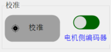
Fig. 6 — 校准 panel, toggle on 电机侧编码器 (motor‑side encoder, green). / Panel kalibracji, enkoder po stronie silnika.
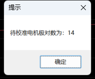
Fig. 7 — Prompt “待校准电机极对数为: 14” (pole pairs = 14), press 确定 (OK). / Komunikat o liczbie par biegunów.
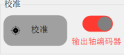
Fig. 9 — Toggle switched to 输出轴编码器 (output‑shaft encoder, red). / Przełącznik na enkoder wału wyjściowego.
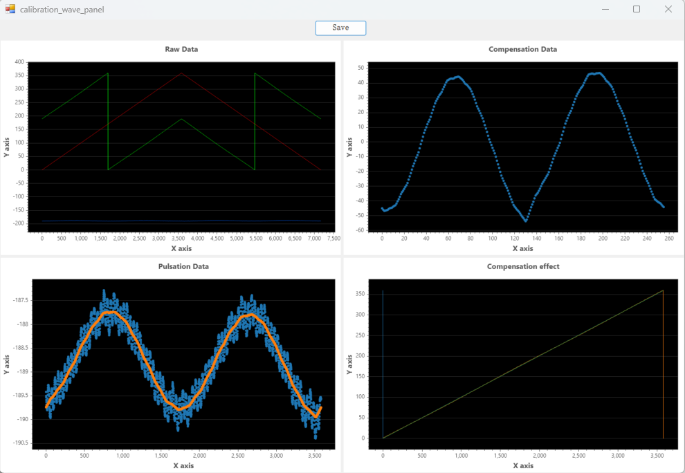
Fig. 8 — “calibration_wave_panel” after the motor‑side stage: Raw Data, Compensation Data, Pulsation Data, Compensation effect (straight line = good). / Okno wyników kalibracji.Original Chinese (2.2)
“参数标定” identifies the electrical and mechanical model of the motor: phase resistance R, phase inductance L, flux linkage λ, viscous friction coefficient and rotor inertia. The firmware injects test currents and performs fast forward/reverse rotations, so the motor body must be restrained. When done, the values are written back into the “电机参数” (motor parameters) fields of the Parameter settings tab. Those fields also show the drive parameters (CAN ID, Master ID, CAN baud, timeouts, protection thresholds, control gains) and the CAN feedback/command frame layout, which is useful later when writing your own CAN driver.
Przygotowanie fizyczne – KLUCZOWE: podczas tej kalibracji silnik wykonuje szybkie obroty w przód i w tył. Trzymaj silnik mocno w dłoni albo zamocuj go w imadle, żeby nie „odleciał” ze stołu.
Weryfikacja wyniku: po zakończeniu kluczowe parametry sterowania zostaną automatycznie wpisane do pól „电机参数” (Fig. 11): rezystancja fazy (R), indukcyjność fazy (L), strumień (λ), współczynnik tarcia lepkiego, moment bezwładności. Pola nie mogą być puste ani zerowe.
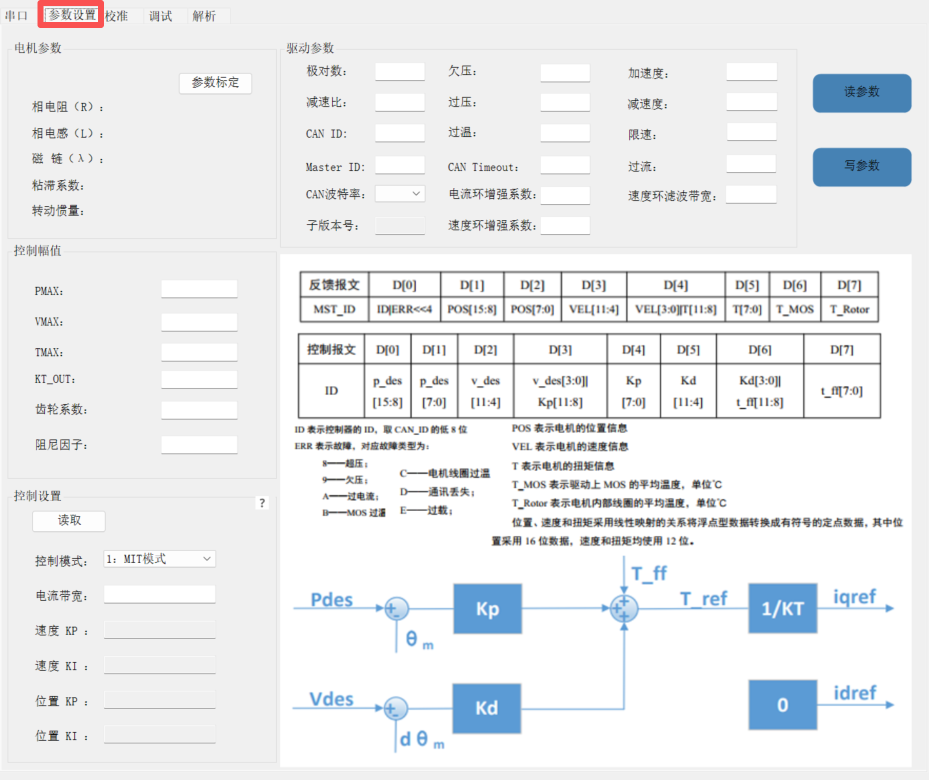
Fig. 10 — 参数设置 tab (highlighted) with the 参数标定 button, drive parameters, control limits (PMAX/VMAX/TMAX/KT_OUT), and the CAN frame layout and MIT control diagram. / Zakładka parametrów z przyciskiem kalibracji parametrów.
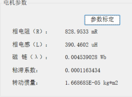
Fig. 11 — Identified values auto‑filled: R ≈ 829 mΩ, L ≈ 390 µH, λ ≈ 0.0045 Wb, viscous ≈ 1.16e‑4, inertia ≈ 1.67e‑5 kg·m². / Parametry po kalibracji.Original Chinese (2.3)
Every DAMIAO motor listens on a Slave ID (the CAN ID you send commands to) and answers on a Master ID. The firmware enforces the offset Master ID = Slave ID + 0x10. Factory default is Slave 0x01 / Master 0x11. On a multi‑motor bus (e.g. a humanoid leg) each motor needs a unique Slave ID, so this step is done once per motor on the bench, before the motor is installed. The tool can connect over the serial (UART) path or directly in CAN mode; in CAN mode you must type the motor’s current Slave ID to reach it.
Instrukcja (PL)
Zasada: Master ID = Slave ID + 0x10. Przykład: jeśli ustawisz Slave ID = 0x01, to Master ID musi wynosić 0x11.
Zapis przez port szeregowy (UART):
W zakładce „调试” (Debug), w panelu „CAN ID”, wpisz docelowe ID w polach Master ID / Slave ID.
Kliknij „设定” (Set), żeby zapisać do silnika (Fig. 12, zaznaczony przycisk).
Test weryfikacyjny: ręcznie wyczyść pola Master/Slave ID w programie i kliknij „读取” (Read). Jeśli wrócą właśnie ustawione wartości, zapis się powiódł.
Szybkie połączenie w trybie CAN:
Fabryczne Slave ID silnika to 0x01.
W panelu „USB模式” (USB mode) przełącz z UART na CAN, wpisz CAN ID 0x01 – połączenie nastąpi od razu (Fig. 13).
Jeśli trzeba zmienić ID, wykonaj kroki a–c powyżej (panel CAN ID, Fig. 14).
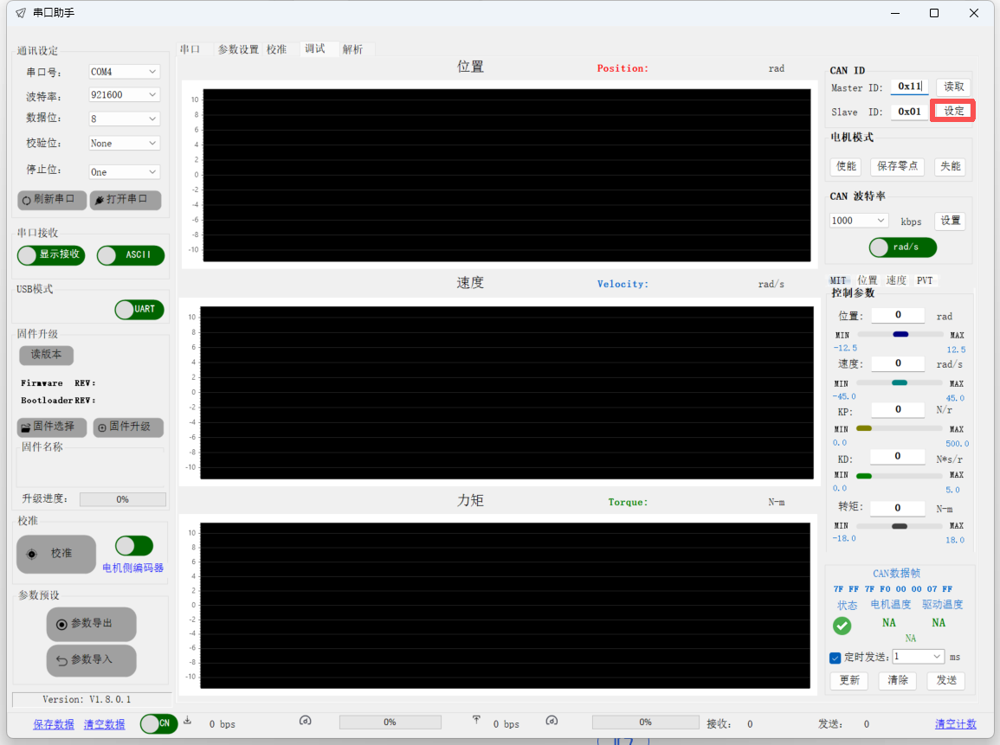
Fig. 12 — 调试 (Debug) tab. Right column: CAN ID panel with Master 0x11 / Slave 0x01 and the 设定 (Set) button highlighted; below it 电机模式 (motor mode) buttons 使能 / 保存零点 / 失能. / Zakładka Debug, zapis ID.
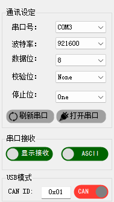
Fig. 13 — USB模式 toggled to CAN, CAN ID 0x01. / Tryb USB przełączony na CAN.
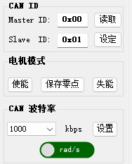
Fig. 14 — CAN ID panel (读取 = Read, 设定 = Set), 电机模式 (使能 Enable / 保存零点 Save zero / 失能 Disable), CAN 波特率 1000 kbps. / Panel CAN ID i trybu silnika.
Original Chinese (3.1)
3.1 修改电机 ID
达妙电机的通讯 ID 遵循特定的偏移逻辑：Master ID = Slave ID + 0x10。
• 示例：若设定 Slave ID 为 0x01，则 Master ID 必须对应为 0x11。
• 串口写入步骤：
a. 在调试界面的 ID 输入框内填入目标 ID。
b. 点击 “设定” 执行写入。
c. 验证测试：手动清除界面上的 Master/Slave ID 数据，点击 “读取”。若能正常回显刚才设置的值，说明写入成功。
CAN 模式快速连接：
• 电机出厂默认 Slave ID 为0x01。
• 切换至 CAN 模式，输入0x01即可直接连接。
• 如需修改 ID，执行上述写入步骤即可。
3.2 Set the zero position
Context (EN)
The motor reports position relative to a stored zero. For a robot joint the zero must coincide with the mechanical zero of the joint, which only exists once the motor is bolted into the structure. Therefore this step is repeated after installation. The sequence is: enable the motor (LED turns green, motor holds), move the joint to its mechanical zero (by hand with the motor enabled at zero torque, or by commanding it), press Save zero, confirm the CAN TX counter increments (proof that the command went out), then disable (LED back to red). Saving the zero while the motor is disabled does not take effect, which is why the enable/disable bracketing is part of the procedure.
Instrukcja (PL)
Uwaga: po zamontowaniu silnika w przegubie robota zero jest ograniczone przez mechanikę – tę operację trzeba wykonać ponownie po montażu.
Włącz silnik (enable): w panelu „电机模式” (Motor mode) kliknij „使能” (Enable). Poczekaj, aż dioda silnika zmieni kolor na zielony – potwierdza to poprawne włączenie.
Ustaw zero mechaniczne: ręcznie lub programowo obróć silnik do docelowego położenia zerowego konstrukcji.
Zapisz zero: kliknij „保存零点” (Save zero point) (Fig. 15, zaznaczony przycisk). Obserwuj licznik wysłanych ramek CAN („发送” w dolnym pasku) – gdy jego wartość się zmieni, zero zostało zapisane i obowiązuje.
Wyłącz silnik (disable): w panelu „电机模式” kliknij „失能” (Disable). Poczekaj, aż dioda wróci na czerwony.
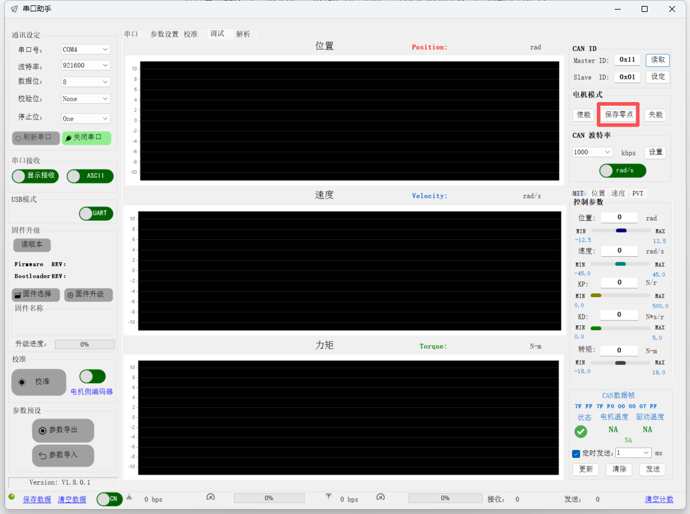
Fig. 15 — 调试 tab with 保存零点 (Save zero point) highlighted. Port is open (关闭串口 button green), Master 0x11 / Slave 0x01. / Zapis punktu zerowego.Original Chinese (3.2)
Firmware images are published on gitee. The driver board exists in several hardware revisions and each motor series has its own firmware line; flashing a file for a different series or hardware revision bricks the driver permanently. Firmware updates are optional for a working motor; do them only when the vendor release notes list a fix you need.
Zasada nadrzędna: przed wgraniem przeczytaj uważnie oficjalne notatki o wydaniu. Nigdy nie wgrywaj firmware z innej serii silników ani dla innej wersji sprzętu – grozi to trwałym uszkodzeniem warstwy sterownika („cegła”).
The first lines of the console banner identify the driver hardware (“DMBOT Motor Driver--V3.0”), the firmware main version (e.g. 6117) and the sub‑version (e.g. 004). The “固件升级” (firmware upgrade) block on the left also shows Firmware REV (6.1.1.7) and Bootloader REV (3.2.0.6) after pressing “读版本” (Read version). The hardware version decides which firmware files are allowed.
Instrukcja (PL)
Przed wgraniem firmware trzeba potwierdzić wersję sprzętową płytki silnika:
Połącz się z programem i otwórz port szeregowy (jak w 2.1).
W konsoli odczytaj stan sprzętu i firmware (Fig. 16, zaznaczony fragment):
Hardware Version – np. V3.0 (pobierany firmware musi wspierać tę wersję sprzętu).
Firmware file names encode the motor model, voltage, version and sub‑version, e.g. APP_DM4340(48V)_V6117_04.bin. The version number’s first two digits are the model code (61 = DM‑J4340P‑2EC family), the last two are the iteration. The matching rule is simply: the first two digits of the file’s version must equal the first two digits of the firmware currently on the motor.
Instrukcja (PL)
Przy pobieraniu firmware stosuj zasadę „pierwsze dwie cyfry muszą się zgadzać”, żeby dobrać plik do modelu silnika:
Przykład: aktualna wersja to 6117.
61 = kod modelu (np. DM‑J4340P‑2EC), 17 = numer iteracji (V17).
Zakaz: nigdy nie próbuj wgrywać firmware, którego wersja nie zaczyna się od 61 (dla tego silnika).
Dla DM‑J4340P‑2EC 48 V właściwy plik to np. APP_DM4340(48V)_V6117_04.bin (Fig. 17, zaznaczony).
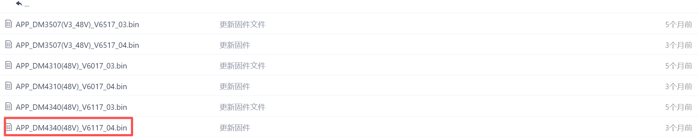
Fig. 17 — Firmware repo listing. DM4310 uses 60xx, DM4340 uses 61xx, DM3507 uses 65xx. For this motor: APP_DM4340(48V)_V6117_04.bin. / Lista plików firmware.Original Chinese (4.3)
Flashing is done from the “固件升级” (firmware upgrade) block in the left column of the Debug tab: select the .bin, press upgrade, watch the progress bar and the console. The bootloader transfers the image in packs (“Pack 1 pass:OK … Pack 7 pass:OK”) and prints Update firmware completed!!!; the motor then reboots and prints its banner again, where the new version can be verified. Losing power or the data link mid‑transfer can leave the driver in a bricked state.
Instrukcja (PL)
Wybór firmware: w bloku „固件升级” (Firmware upgrade) kliknij „固件选择” (Select firmware) i wczytaj pobrany plik .bin (lub inny obsługiwany format). Nazwa pliku pojawi się w polu „固件名称” (Fig. 18).
Ponowna weryfikacja: jeszcze raz sprawdź, czy model, napięcie i wersja sprzętu w nazwie pliku zgadzają się z fizycznym silnikiem.
Wgranie:
Kliknij „固件升级” (Start upgrade).
Podczas wgrywania nie wolno odłączać zasilania ani przewodu danych!
Potwierdzenie wyniku:
Po ok. 5 sekundach w konsoli powinien pojawić się napis Update firmware completed!!! – oznacza to sukces (Fig. 19).
Silnik następnie sam się zrestartuje i wypisze banner startowy – sprawdź w nim nową wersję firmware.
Fig. 19 — Success: “Pack 1…7 pass:OK”, then Update firmware completed!!!, followed by the reboot banner. / Konsola po udanym wgraniu firmware.Original Chinese (4.4)
Condensed, ordered procedure for one motor. Each step has a pass criterion so an agent (or a person) can tell when to move on. Firmware update (section 4) is not part of the standard path; do it only when required.
Lista kontrolna (PL)
Narzędzie: DM_Motor_Tool v1.8.0.1 uruchomiony (SmartScreen → „Run anyway”). OK, gdy okno programu jest otwarte.
Zasilacz: ustawione napięcie znamionowe z etykiety (48 V dla DM‑J4340P‑2EC), limit prądu 3 A, wyjście wyłączone.
Okablowanie przy wyłączonym zasilaniu: XT30 (+/− sprawdzone), CAN H↔H i L↔L, adapter USB‑CAN w komputerze. Silnik luzem, bez obciążenia na wale.
Włączenie zasilania: dioda silnika czerwona. Jeśli nie – wyłącz zasilanie i sprawdź okablowanie.
Port: „刷新串口” → wybór COM → 921600/8/N/1 → „打开串口”. OK, gdy w konsoli pojawia się banner „DMBOT Motor Driver”. Zanotuj: Hardware Version, Firmware Version, Sub Version, CAN ID, MASTER ID.
Kalibracja enkodera silnika: panel „校准”, przełącznik na „电机侧编码器”, klik „校准”, zatwierdź liczbę par biegunów, poczekaj na okno „calibration_wave_panel”. OK, gdy „Compensation effect” jest prostą linią.
Kalibracja enkodera wału: przełącznik na „输出轴编码器”, klik „校准”, poczekaj na koniec.
Kalibracja parametrów: zakładka „参数设置” → „参数标定”. Silnik trzymany/zamocowany!OK, gdy pola R, L, λ, tarcie, bezwładność są wypełnione niezerowymi wartościami.
ID: zakładka „调试”, panel „CAN ID”: wpisz Slave ID = N, Master ID = N + 0x10, klik „设定”. Wyczyść pola, klik „读取”. OK, gdy wracają te same wartości.
Zero (na stanowisku lub po montażu w przegubie): „使能” → dioda zielona → ustaw zero mechaniczne → „保存零点” → licznik „发送” wzrósł → „失能” → dioda czerwona.
Zakończenie: „关闭串口” (zamknij port), wyłącz zasilacz, dopiero potem odłącz złącza (za obudowę).
(Opcjonalnie) Firmware: odczyt wersji → plik z pasującymi pierwszymi dwiema cyframi i wersją sprzętu → „固件选择” → „固件升级” → czekaj na „Update firmware completed!!!” → sprawdź nową wersję w bannerze.
UI glossary (Chinese → English → Polish)
Chinese (as in the tool)
English
Polish
通讯设定
Communication settings
Ustawienia komunikacji
串口号 / 波特率 / 数据位 / 校验位 / 停止位
Port / Baud rate / Data bits / Parity / Stop bits
Port / Prędkość / Bity danych / Parzystość / Bity stopu
刷新串口 / 打开串口 / 关闭串口
Refresh ports / Open port / Close port
Odśwież porty / Otwórz port / Zamknij port
串口接收 · 显示接收 · ASCII
Serial receive · Show received · ASCII mode
Odbiór · Pokaż odebrane · Tryb ASCII
USB模式 (UART / CAN)
USB mode (UART / CAN)
Tryb USB (UART / CAN)
固件升级 · 读版本 · 固件选择 · 固件名称 · 升级进度
Firmware upgrade · Read version · Select firmware · Firmware name · Progress
Aktualizacja firmware · Odczyt wersji · Wybór pliku · Nazwa · Postęp
Komunikat · OK · „Liczba par biegunów silnika do kalibracji:”
Provenance
Text was extracted block‑by‑block from the Feishu document on 9 Oct 2026; the 19 images are the originals served by Feishu for that document (two bench photos were downscaled to 1600 px). The Chinese passages in the collapsible blocks are verbatim. Translations and the “Context (EN)” paragraphs are editorial additions written for this project; where they go beyond the source (e.g. interpretation of the console banner, the glossary), they are based on what is visible in the screenshots.